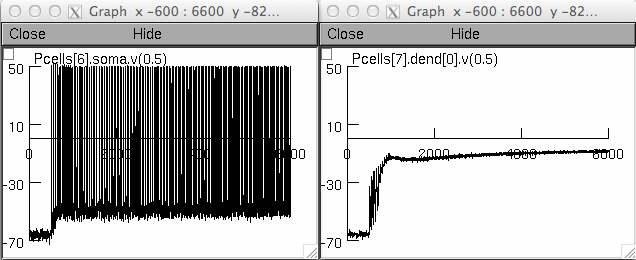

This is the readme.txt for the L5 PFC microcircuit from the paper: Papoutsi A, Sidiropoulou K, Poirazi P. "Dendritic nonlinearities reduce network size requirements and mediate ON and OFF states of persistent activity in a PFC microcircuit model". Plos Computational Biology 2014. Also used in: Papoutsi A.,Sidiropoulou K, Cutsuridis V., Poirazi P. "Induction and modulation of persistent activity in a layer V PFC microcircuit model". Frontiers in Neural Circuits 2013. Abstract: Technological advances have unraveled the existence of small clusters of co-active neurons in the neocortex. The functional implications of these microcircuits are in large part unexplored. Using a heavily constrained biophysical model of a L5 PFC microcircuit, we recently showed that these structures act as tunable modules of persistent activity, the cellular correlate of working memory. Here, we investigate the mechanisms that underlie persistent activity emergence (ON) and termination (OFF) and search for the minimum network size required for expressing these states within physiological regimes. We show that (a) NMDA-mediated dendritic spikes gate the induction of persistent firing in the microcircuit. (b) The minimum network size required for persistent activity induction is inversely proportional to the synaptic drive of each excitatory neuron. (c) Relaxation of connectivity and synaptic delay constrains eliminates the gating effect of NMDA spikes, albeit at a cost of much larger networks. (d) Persistent activity termination by increased inhibition depends on the strength of the synaptic input and is negatively modulated by dADP. (e) Slow synaptic mechanisms and network activity contain predictive information regarding the ability of a given stimulus to turn ON and/or OFF persistent firing in the microcircuit model. Overall, this study zooms out from dendrites to cell assemblies and suggests a tight interaction between dendritic non-linearities and network properties (size/connectivity) that may facilitate the short-memory function of the PFC. Model usage: This code was written in and requires NEURON which is freely available from http://www.neuron.yale.edu Download and expand this archive and compile the mod files located in the "mechanisms" folder with nrnivmodl (this model was run under the unix/linux operating systems). In the experiment folder: 'incell.hoc' is the setup of the interneurons 'pfc_pc_temp.hoc' is the setup of the pyramidal neurons. 'net.hoc' is the microcircuit setup and the stimulation protocol. 'values_NMDA.hoc' has the conductances for the nmda for the different ratios used. 'importBackgroundStimParams.hoc' has indicative time points of backgrouns synaptic activity. 'vecstim.hoc' implements background synaptic activity. 'validation.hoc' has the validation protocol. The specific parameters show the validated NMDA current, as in Supporting Figure 1A. To run validation.hoc execute the run_validation. 'experiment.hoc' has the experimental protocol. The specific parameters show persistent activity in the microcircuit for the ratio 2.3 and the generation of the dendritic plateau potential, as in Figure 3A,C. To run experiment.hoc execute the run_experiment in the experiment folder (this will be the same as the auto-launch demo started from mosinit.hoc). After short while these graphs should appear:  For questions or comments please contact: Papoutsi Athanasia athpapoutsi at gmail.com or Poirazi Panayiota poirazi at imbb.forth.gr Computational Biology group Foundation of Research and Technology Crete, Greece The model files are also available at the web site: http://www.dendrites.gr